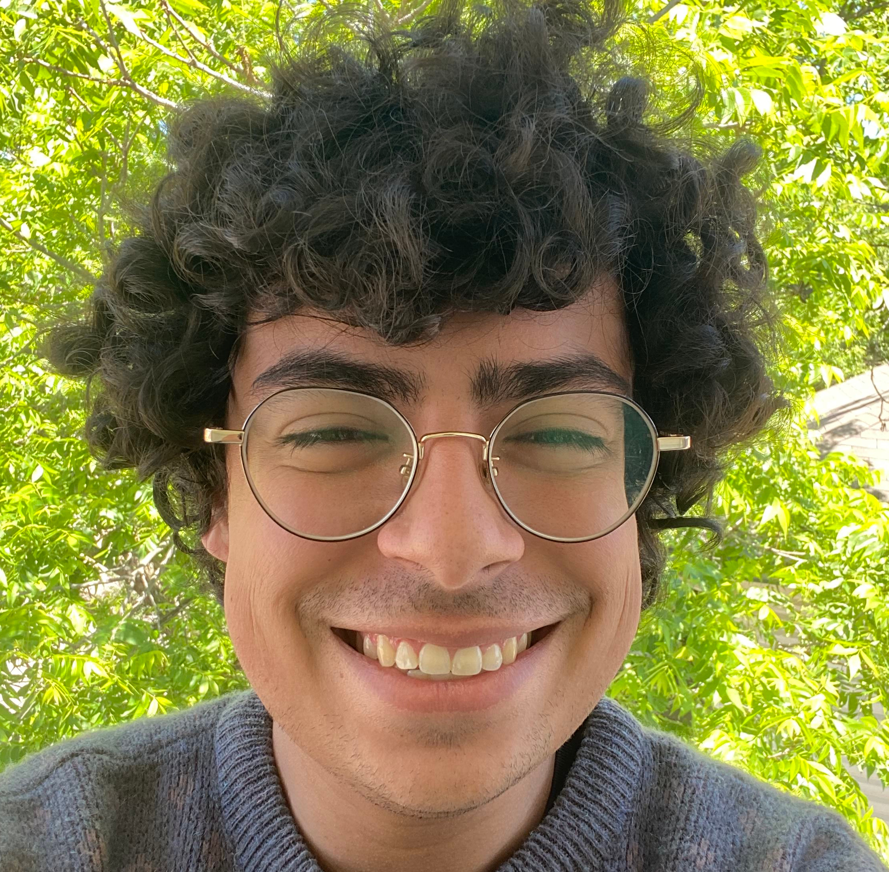

About Me
I am a fourth year math undergraduate at The University of Texas at Austin. Currently, my interests include functional analysis and using voronoi cells to model fluid dynamics.
I am the vice president of Math Club, and a member of Mathematicians of Color Alliance and Association for Women in Math. I also participate in the Directed Reading Program and run a computational mathematics reading group.